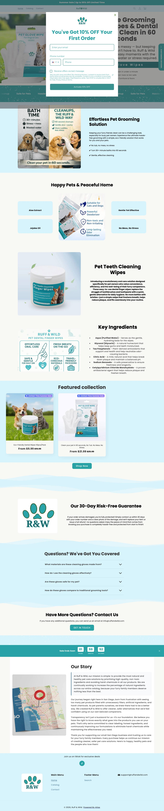
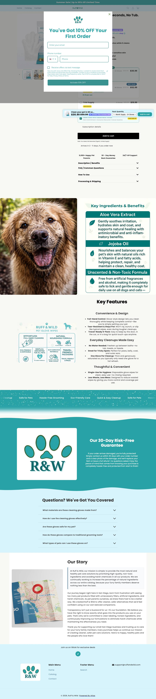
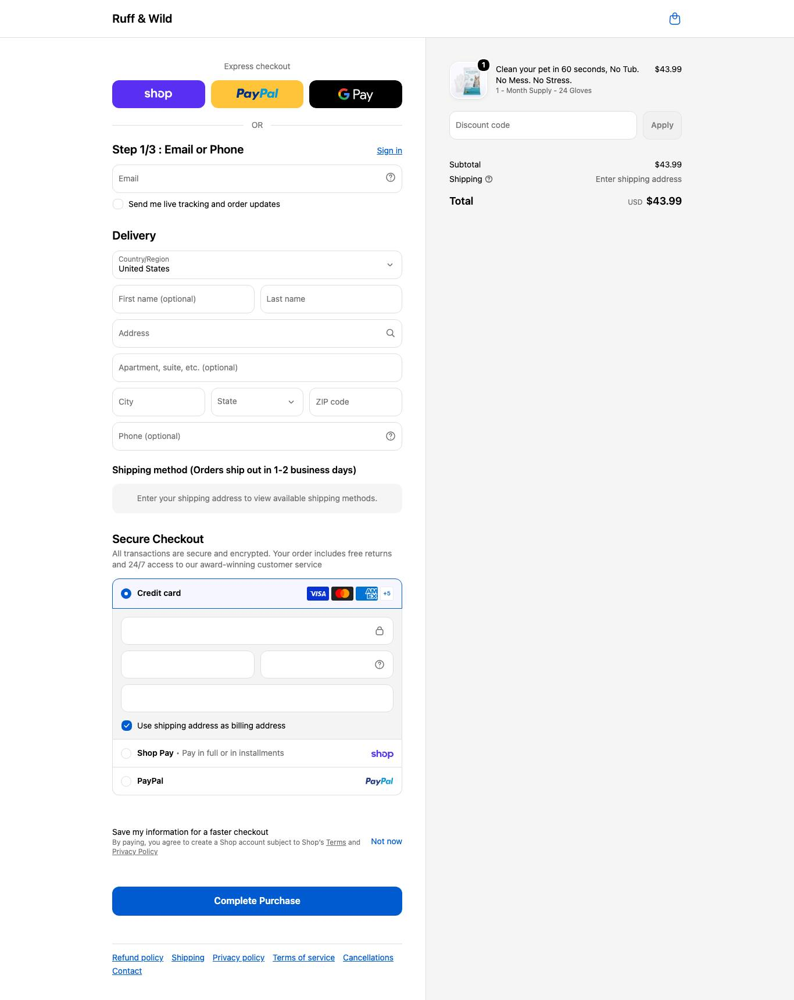

ruffandwild.com · USD (alcança GB) · Shopify · catálogo de 2 produtos
| Item | Preço |
|---|---|
| Eco-Friendly Dental Wipes 50pcs | £9.99 £19.99 |
Full-page em Chromium headless (1 viewport). O benchmark de 4 viewports está em cobertura reduzida — ver lacuna no painel.



| Elemento | O que Ruff & Wild faz |
|---|---|
| Big idea | problema-agitação: dar banho é um pesadelo |
| Gancho (hook) | "No Bath. No Mess. No Stress." |
| Ângulo | demonstração do produto resolvendo dor concreta; 3 negações em ritmo |
| Oferta na tela | âncora £59.99 → £21.99 (-63%) + Eco-Friendly Dental Wipes 50pcs |
| Objeção que resolve | dar banho é trabalhoso e estressante |
| O que copiar da estrutura (não da marca) | Onde |
|---|---|
| Comparação "BATH TIME (30+ min, stress, água) vs THE RUFF & WILD WAY (60s)" | home, hero+1 |
| "Key Ingredients" com ícones (Aloe, Jojoba) — constrói confiança de produto barato | home, meio |
| Countdown "Sale Ends Soon 01:59:52" + "Our Story" (San Diego) | home, baixo |
| Dado | Motivo |
|---|---|
| Tráfego mensal (SimilarWeb) | não executado nesta rodada |
| Custo real de produto | exige sourcing por imagem |
| Corpo completo do criativo + transcrição | conector devolve só título e datas |
Aula de CRIATIVO problema-solução e de produto de 1 SKU leve e barato (£3–5 de custo). O 'liga/desliga' sugere que rentabilidade é sensível. Modele o hook e o formato demo; some order bump para salvar a margem.